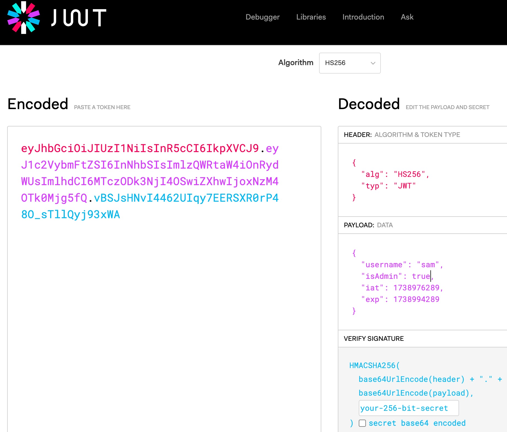
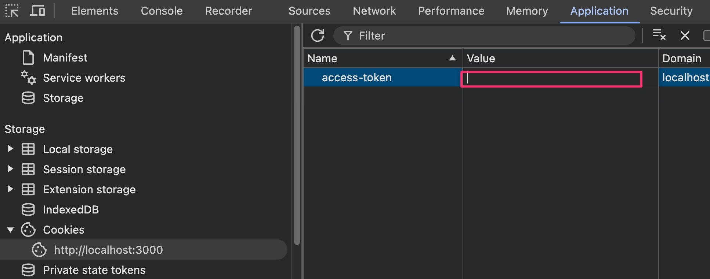

Now we are ready to make our first try for the flag.
Try to get it by going to the
/get-flag page.
The cookie you got earlier was sent to the server and the code running at /get-flag studied it and noticed that the isAdmin property is false and so... no flag.
If you go back to the jwt.io tab you brought up earlier, notice you can EDIT the JSON in the PAYLOAD window. (for now don't touch the other windows)
As you make edits, the JWT on the left is updated to match!
Edit the PAYLOAD in jwt.io to set isAdmin to: true
As you make this edit, the second region on the left is updated.
Notice the third region is also updated. This region holds the digital signature. Since we don't yet have the secret key used to sign JWTs for this application, there is no way that we'll be able to use the tampered JWT on the left of jwt.io to get the flag.
Even though it won't work, let's try it out anyway just to learn.
You should see something like this in your jwt.io window:

Copy the JWT on the left to the clipboard.
Then go back to your Developer Tools window and double-click the cookie value to select it, then press Delete to erase it entirely:

Now paste your JWT from the clipboard into this location.
With the tampered JWT in place, lets try for the flag again:
/get-flag
You should have gotten an error that the token failed verification.
Indeed, this is what we expected since we don't yet know the secret used to sign it.